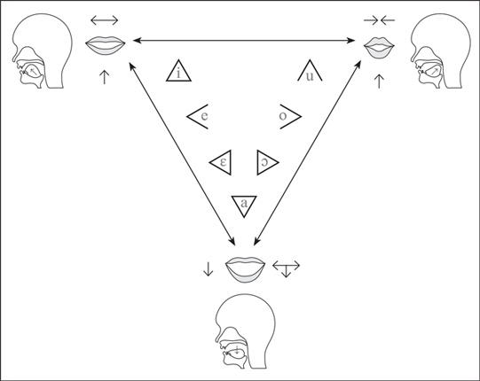
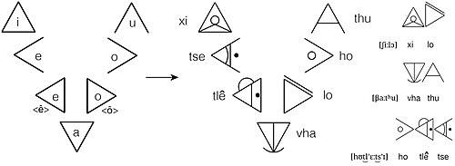

The IsiBheqe soHlamvu Syllabary
A simple explainer page with interactive chart
IsiBheqe soHlamvu is a modern, phonetically-based indigenous writing system developed for all Southern African isiNtu languages. It is also known as Ditema tsa Dinoko, Xifhungo xa Manungu, or Vhuga ha Madungo.
IsiBheqe/Ditema draws from Southern African traditional art, like Sesotho litema art (used on murals) and isiZulu ucu art (used on beadwork). This art was decorative but also used systems of shapes to convey messages—births, milestones, news for neighbors and travelers.
The script can be used for all Southern African isiNtu languages and dialects. It's especially useful for languages without formal Latin orthography, like sePulana, isiBhaca, isiHlubi, sePhuthi, isiLala, isiNhlangwini, and Northern Transvaal isiNdebele.
Using this page:
📖 Explainer sections below introduce the basic concepts
🎵 Interactive chart at the bottom lets you click and hear each syllable
BASIC IDEA OF THE ISIBHEQE/DITEMA SCRIPT
What does that mean?
Syllabary: Each symbol stands for a syllable (not a letter).
An IsiBheqe symbol is called an ibheqe (plural: amabheqe).
Featural: The symbol visually shows you how to pronounce it.
It shows the syllable's phonetic features.
The triangle = your mouth
The triangle (or chevron) is the "nucleus" of an ibheqe.
Think of it as your vocal tract:
- Tip of triangle = front of mouth (lips)
- Base of triangle = back of throat
What the symbols show
1. The vowel: Which direction the triangle points
2. Where the consonant is made: Lips? Teeth? Throat?
3. How the consonant is made: Stop air? Let it flow?
4. Voice and airflow: Extra markings show voicing, ejection, nasalization
The key principle: One symbol captures one sound—consistently across all Southern African languages.
VOWELS
👆 Click any symbol to hear it. Say it out loud.

Why This Matters
Same vowel = same triangle direction, no matter which language.

CONSONANTS
The Three Questions
Lips? Teeth? Tongue? Throat?
→ Front sounds = front of triangle. Back sounds = back of triangle.
Stop the air? Let it flow? Make a click?
→ Each method gets its own shape.
• Say "sssss" → no buzz (voiceless)
• Say "zzzzz" → feel the buzz? (voiced)
The SHAPES - How You Make Sounds
Different ways of making sound = different shapes:
Block the air → straight lines
Like popping a balloon: p, t, k
Squeeze air through → curved lines
Like air hissing: f, s, sh
Stop then squeeze → straight + curved
Combination: ts, tsh
Suction sound → hourglass
q, x, c in isiZulu
Through your nose → circles
At front of triangle: m, n, ng
Vibrating/rolling → angles
Rolled r
The POSITIONS - Where in Your Mouth
The triangle represents your mouth. Markings go where you make the sound: